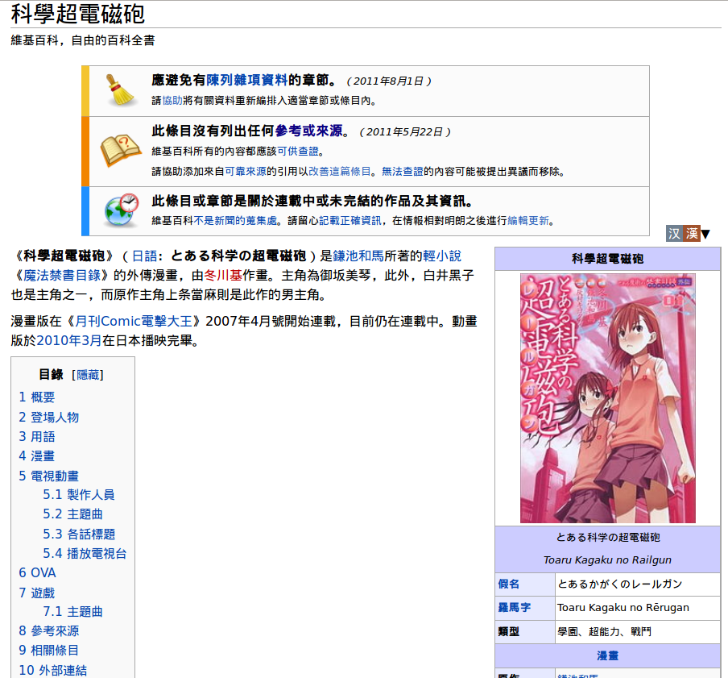
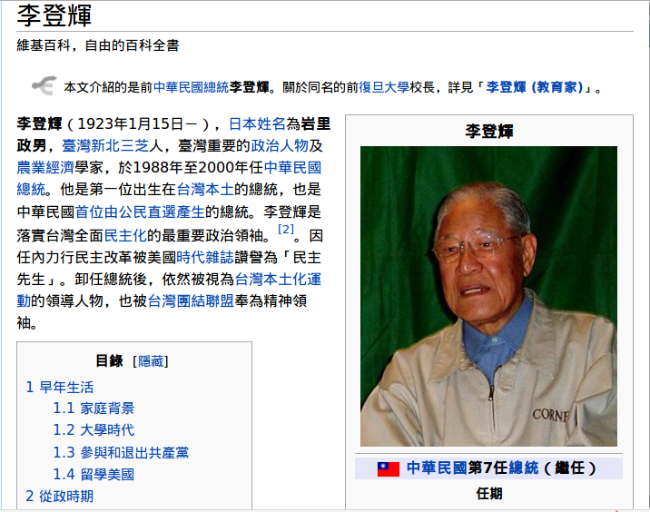
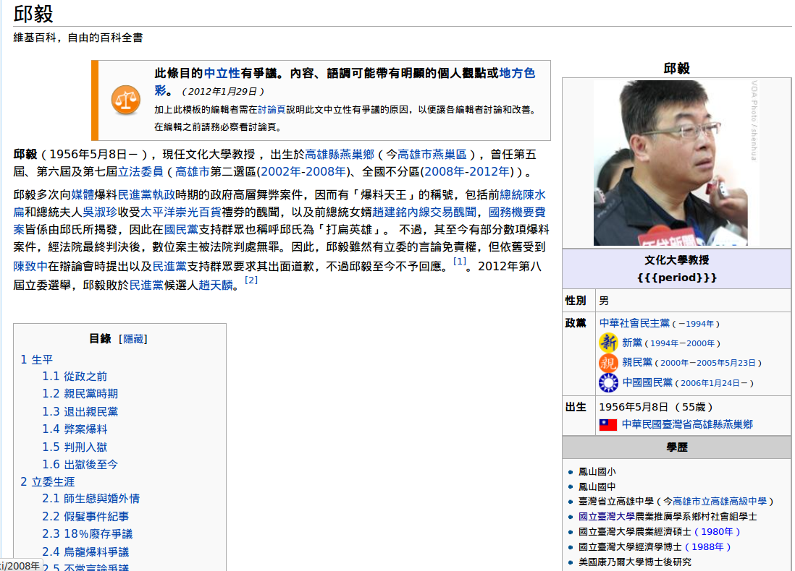

也紀念我們永遠的朋友 李士傑先生（Shih-Chieh Ilya Li）。
維基化．話維基(7)－誰才是專家？（下）
在上一話當中，提到了如何去辨認虛假的專家或撈過界的專家。在強調來源、依據的維基百科裡，文獻考證的攻防戰也正是經常圍繞著作者的身分展開。然而，不是每一次的爭論，都能夠用同樣的方式來處理。在一些領域，幾乎沒有足以公認為「專家」的角色，這個時候如何去做適當的判斷，也經常造成一些爭議。
沒有同行的權威
相對於傳統百科紀錄的都是「重大」的事物，對於一些市井小民關心的知識往往被排除在外；維基百科對於流行事物、次文化、民間常識等等事物，也有足夠的空間可以收錄其中。然而這些議題既然不被學術圈注意，相對的也表示權威性的研究人才、嚴守學術原則而生產的資料都很容易付諸闕如。對這些事物關注的消息，以往只來自於媒體記者，在網路興起後，則開始有些部落客因為大量的書寫並獲得認同，形成某種意見領袖式的形象，像是「宅神」朱學恆之於奇幻文學、或是「一劍浣春秋」之於色情影片之間的關係。
我們並不否定這些人在其擅長的議題之上，確實有所成就，但是他們的意見是不是能夠視同為專家的發言，就得令人猶豫一下了。因為，在這種缺乏學術原則規範的圈子裡，意見領袖並不是經由大量的、嚴謹的考核之後出現的，往往只是發言多、文筆好，容易獲得讀者的認同以及轉載，自然而然形成的。而由於他們所擅長的範籌缺乏其他的專家存在，往往在意見領袖的地位形成之後，又更不容易受到挑戰、考核。於是，他們的發言變成一種不經同行審查，就自動升級成事實的意見。從這樣的角度來看，他們所生產出的「文獻」，其可靠度是需要被打些折扣的。然而由於其知名度，媒體記者在碰到相關領域的新聞事件時，又經常對訪問這些意見領袖的意見，使其發言出現在被視為「有公信力」的媒體上。經由這樣的漂洗之後，便成為被維基百科規範所承認的「可靠來源」。
這並不意味著維基百科的可靠來源判定上出現重大的缺點，因為可靠度是相對的概念。對於非科學的知識（甚至可能是常識），要求極嚴謹的資訊來源並不合理。像奇幻文學中許多規則只是一種約定俗成的文化，沒有強制性和必然性，那麼只要大多數愛好者同意有這樣文化存在其實就可以視為事實，並不需要反覆實驗證明。同時，因為這些領域本來就缺乏更可靠的資訊，所以相對之下，這些行家意見的重要性已經被媒體所認證的情況下，本身就已經是能取得的文獻中最可靠的說法了。
▲ 圖1：維基百科中動漫作品中的描述，只要經過大多數愛好者同意，就可視為事實而保留在維基百科上，但編寫時仍得符合百科的書寫格式與第三方觀點
簡單來說，面對沒有同行的權威，並不需要吹毛求疵到完全拒而不用。假如這些意見遭受到其他編輯者的質疑時，最好的方式則是在用詞上明確揭示這是某些意見領袖所說，具有一定影響力的說法，未必是絕大多數承認且毫無疑問的事實。這樣子意見正確性的責任就必須由原發言者去承擔，而非由維基百科編者自行擔負了。
一個議題 各自表述
比起沒有同行的權威來說，更麻煩的其實是一些「公說公有理、婆說婆有理」，同時又缺乏可驗證性的事件。最顯而易見的例子就是政治議題，像是對於政策、政黨或是政治人物的評價，我們常常可以看到一票「政治觀察家、資深政論家、資深媒體人」在媒體上高談闊論。在台灣的媒體生態下，他們往往各為其主，相持不下。
在撰寫維基百科的時候，稍微謹慎編者面對這些意見，會記起國中課文裡的名言錦句「你聽你的鳥鳴、他看他的日出」，於是遵尋「中立的立場」指引，將多方對立的意見在文中並列，並且不做判斷。保持中立當然是個很棒的做法，不過單單注意到這點是不夠的。要記住維基是個「人人都可以編寫的百科全書」。保持中立只顧及前半段「人人都可以編寫」的部分，而照顧了多方意見，卻忽略了「百科全書」本身需要的嚴謹。
▲ 圖2：因政治立場不同，對於前總統李登輝的看法南轅北轍，但編寫維基百科時仍得多方觀點並呈
百科全書跟文學不同，衣料就必須是衣料，假如在條目中我們要把它寫成是棋盤、稿紙或是綠豆糕，那是很詭異的事情（註）。這些人的發言因為經過媒體的轉載，在形式上似乎可以通過維基百科裡對於可靠來源的最低底線，然而假如擁有更好的來源時，對於這些名嘴的說法，應該儘可能的刪節比較好。在前一話當中，我們就看到一個從事文化研究的教授，在與文化相關的文字學上也會犯下大錯；那麼對於一個昨天談稅改、今天談 NBA、明天又可以談恐龍法官的人來說，要我們相信他同時在財政、體育與司法上都有很好的認知，簡直是不可能的事情。如果因為其媒體上的知名度而將他們視為「專家」，條目的素質恐怕會相當值得憂慮。
▲ 圖3：邱毅落選後在電視台開節目天南地北什麼話題都能談，引述其說法要小心百科全書所需要的嚴謹性
或許有些人會因為名嘴常常引經據典，而稍微感到迷惑，認為有時候不妨參考他們的意見。不過由於他們立場先行，就算引述了許多數據、文獻也多半是斷意取義或刻意篩選，不能被信賴。如果真的要引述，利用名嘴的話當成線索，去挖出他們所引述的文獻，然後直接參考文獻進行編輯，應該會是更恰當的。
慎選來源 不要貪圖方便
不管是網路上的次文化意見領袖、還是政論節目中的名嘴，他們的意見經常出現在維基百科上，很多時候是編輯者偷懶的結果。因為這些人在傳媒、網路上的影響極大，很容易搜尋得到。相對於真正的專家可能只寫書，書本還沒有電子版可供下載，只能去圖書館找，這些知名人物的意見引用起來容易多了。如果被這樣的方便所誘惑，很容易就把不可靠的資訊帶進了維基百科中。
在維基百科出現以前，所有的百科全書都是由知識上的菁英來編輯。往往在篩選什麼是值得收錄的條目時，不能夠滿足一般大眾的需要。維基百科的出現，讓大家關心的流行文化、次文化都能夠進入百科全書中，形成被流傳的知識，不但擴大了知識的視野，同時也深化了知識的自由。這種自由的出現必須要在儲存技術、網路通訊技術都發達的時代才可能被實踐，可以說是得來不易的，更需要我們珍惜，不把自由誤當成放縱。用嚴肅的態度做資料收集的工作，儘量避免引用到虛假專家的意見，才真正不辜負了手中神聖的編輯權力。
註：假如你看不懂句話或是上一段中的「名言錦句」出自什麼梗，請搜尋「宋晶宜 雅量」。
您也許有興趣閱讀以下文章:
- 維基化．話維基(6)－誰才是專家？（上） - 2012-02-06
- 維基化．話維基(5)－「官方」的迷思 - 2012-01-16
- 維基化．話維基(4)－我的條目不出名？ - 2011-12-20
- 維基化．話維基(3)－誰是條目的所有人？ - 2011-11-24
- 維基化．話維基(2)－讓政治爭議不再棘手 - 2011-11-09
- 維基化．話維基(1)－從腦袋開始維基化 - 2011-10-24
自由軟體鑄造場電子報 : 第 190 期 開放源碼的安全演算法工具︰OpenSSL（1） - 基礎操作與雜湊演算法
標籤: 維基化, 維基百科, 方針, 指引, Wikipedia, 專家, expert,
分類: 自由專欄
專欄總覽


E-Mail：contact@openfoundry.org Address：台北市南港區研究院路2段128號 中央研究院資訊科學研究所 . 隱私權條款. 使用條款

評論